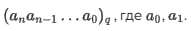

Начало
Позиционная система счисления
— система счисления, в которой значение цифры в записи числа зависит от её позиции в числе.
Позиционная система счисления определяется натуральным числом , называемым основанием системы счисления.
Систему счисления с основанием называют -ричной, в частности, двоичной (q = 2), троичной (q = 3), десятичной (q = 10) и т. д.
Количество цифр, используемых в системе счисления, определяется её основанием. В десятичной системе цифр десять, в двоичной системе — две. То есть в q-ричной системе счисления количество цифр равно q, при этом используются цифры от 0 до р - 1.
При записи чисел в позиционной системе, отличной от десятичной, принято писать основание справа внизу: 
Когда мы записываем число в десятичной системе счисления (q = 10), мы как бы раскладываем его в сумму единиц (10^0), десяток (10^1), сотен (10^2), тысяч (10^3) и т.д., при этом количество в каждом разряде строго меньше 10.
Перевод в десятичную систему счисления осуществляется прямым вычислением по этой формуле. 
Наглядный пример:

<--Назад
Вперёд-->